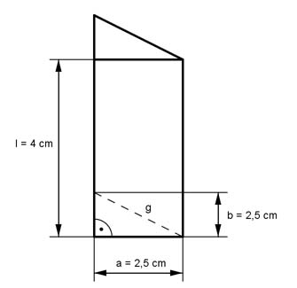

Aufgabe 15 Berechnen Sie die Oberfläche O eines rechtwinkligen Dreieckprismas mit der Gesamtlänge l = 4 cm und der Länge der Katheten a und b = 2,5 cm.  O = 2 * G + M a * b 2,5 cm * 2,5 cm G = ------- = ----------------- = 3,125 cm² 2 2 Pythagoras: g² = 2,5² cm² + 2,5² cm² g² = 6,25 cm² + 6,25 cm² = 12,5 cm² |√ g = 3,54 cm U = Umfang der Grundfläche: U = 2 * 2,5 cm + 3,54 cm = 8,54 cm M = U * l = 8,54 cm * 4 cm = 34,16 cm² O = 2 * 3,125 cm² + 34,16 cm² O = 6,25 cm² + 34,16 cm² O = 40,41 cm²